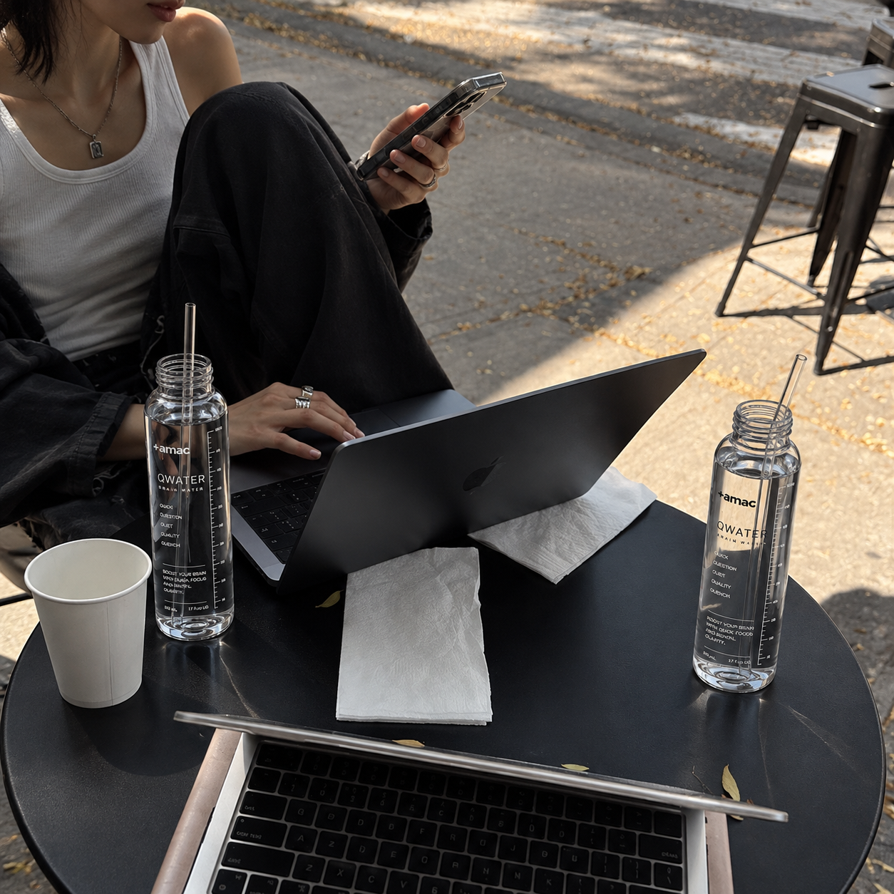
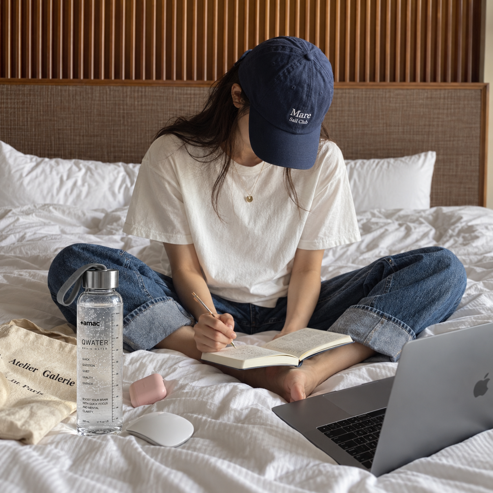

WHEN EVERY HOUR NEEDS
YOUR ATTENTION.
대화와 결정이 쉴 틈 없이 이어지는 날이 있습니다.
바쁜 일정 속에서는 더 많은 자극보다 흐트러지지 않는 기준이 필요합니다.
Q1으로 하루의 집중 리듬을 시작하십시오.
Some days are filled with nonstop conversations and decisions.
When the schedule gets crowded, you need a steady point of focus—not more stimulation.
Start your daily rhythm of focus with Q1.

STAY WITH
ONE THING.
중요한 일일수록 빠른 반응보다 깊은 집중이 필요합니다.
잠시 주변의 소음을 멈추고 하나의 생각에 충분한 시간을 주십시오.
Q1으로 몰입의 리듬을 시작하십시오.
The work that matters most often requires depth, not speed.
Step away from the noise and give one thought the time it deserves.
Begin your rhythm of deep focus with Q1.
STOP WAITING
TO FEEL READY.
완벽한 컨디션이 올 때까지 기다리면 하루는 이미 지나갑니다.
해야 할 순간에 시작하는 사람이 결국 더 많은 결정을 끝냅니다.
Q1을 '시작한다'는 행동과 연결하십시오.
Wait for perfect conditions and the day may already be gone.
People who start when it is time eventually finish more decisions.
Connect Q1 with one action: begin.
FOCUS IS
AN ENVIRONMENT.
휴대폰, 알림, 소음, 시간과 음료까지 모두 환경의 일부입니다.
집중을 원한다면 주변 조건부터 일정하게 만드십시오.
Q1은 그 환경을 만드는 작은 장치입니다.
Your phone, notifications, noise, timing and even what you drink are part of your environment.
If you want focus, start by making the conditions more consistent.
Q1 is one small part of that environment.
DESIGN YOUR
DAYTIME RHYTHM.
집중은 하루 종일 동일하게 유지되지 않습니다.
그래서 중요한 일에 사용할 시간을 먼저 확보하는 사람이 유리합니다.
Q1은 중요한 시간의 앞에 놓이는 제품입니다.
Focus does not stay constant throughout the day.
People who protect time for important work have an advantage.
Q1 is designed to sit in front of that time.
DON'T SURVIVE
THE DAY. RUN IT.
버틴다는 생각은 하루를 수동적으로 만듭니다.
언제 일하고 언제 멈출지 정하면 하루의 주도권이 달라집니다.
Q1은 'ON' 구간을 명확하게 만드는 챕터입니다.
Thinking only about getting through the day makes you reactive.
Decide when to work and when to stop, and the relationship changes.
Q1 defines the ON chapter.

PROFESSIONALS HAVE
A STARTING RITUAL.
운동선수도, 셰프도, 창작자도 시작 전에 반복하는 행동이 있습니다.
반복은 불필요한 선택을 줄여줍니다.
Q1을 당신의 업무 전 의식으로 만드십시오.
Athletes, chefs and creators often repeat the same actions before they begin.
Repetition removes unnecessary decisions.
Make Q1 part of your pre-work ritual.
NOT JUST FOR
YOUR BEST DAYS.
컨디션이 좋은 날에는 누구나 시작하기 쉽습니다.
루틴의 가치는 그렇지 않은 날에 더 분명하게 나타납니다.
Q1은 기분과 무관하게 반복할 수 있도록 단순하게 설계됩니다.
Anyone can start when they feel great.
The value of a routine becomes clearer on the days you do not.
Q1 is intentionally simple enough to repeat regardless of mood.